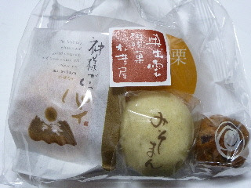
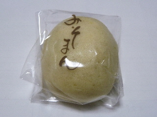
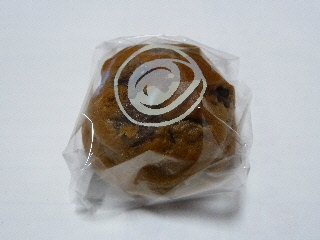
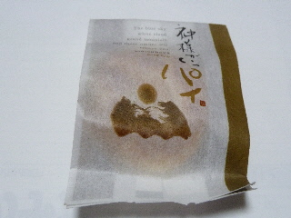
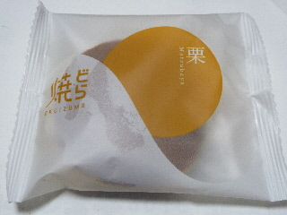

松葉屋のお試しセット
2015/01/01
松江の一畑で買ったものです。（378円）
年越しにのんびりテレビ見ながらいただきました。

お試しでお得なのかな？
どうなんだろう。

キメの細かい餡が良かったです。

こしあんの次は粒あんです。

カボチャ餡のパイです。

ふっくらやわらかいどら焼きです。
松葉屋といえばやっぱりどら焼きですね。
松江一畑百貨店内
2015/01/01
松江の一畑で買ったものです。（378円）
年越しにのんびりテレビ見ながらいただきました。

お試しでお得なのかな？
どうなんだろう。

キメの細かい餡が良かったです。

こしあんの次は粒あんです。

カボチャ餡のパイです。

ふっくらやわらかいどら焼きです。
松葉屋といえばやっぱりどら焼きですね。
2007/10/27
ふんわりとした生地と生クリームと餡がよくあってますね。
それにさらに、モンブラン風のクリームが追加されているんですが、クリームとクリームの組み合わせって難しいですね。
栗がまるまる1つ入っていればインパクトがあったんでしょうけど、マロンクリームだけなので、生どらとちょっと味がかぶってる感じがしました。
軽めの栗のクリームと生どらで、重たくならなく食べやすいです。
でも個人的にはもっと栗味が欲しかったです。
2007/9/23
一畑百貨店内の松葉屋さんで「いちじく生どら」を買いました。
どらやきにしては値段が高いと思って、今まで松葉屋さんのフルーツ生どらは買っていなかったので、今回初めて食べました。
いちじくって糖度が高いものをよく「甘くておいしい！」ってもてはやされますけど、食べ方によりますよね。裏を返せば「砂糖甘いだけかも？」って思ったりします。
ここのイチジクはそんなに糖度が高くなくて、フレッシュ感がありました。生どらなので、他に生クリームと餡がありすでに甘いため、このフレッシュ感のあるいちじくがとても美味しく感じました。いいバランスですね。
値段が高いので「もうちょっとでケーキが買えるよ」って思って今まで買わなかったんですが、考え方を改めました。また機会があったら他のフルーツ生どらも買って食べようと思いました。